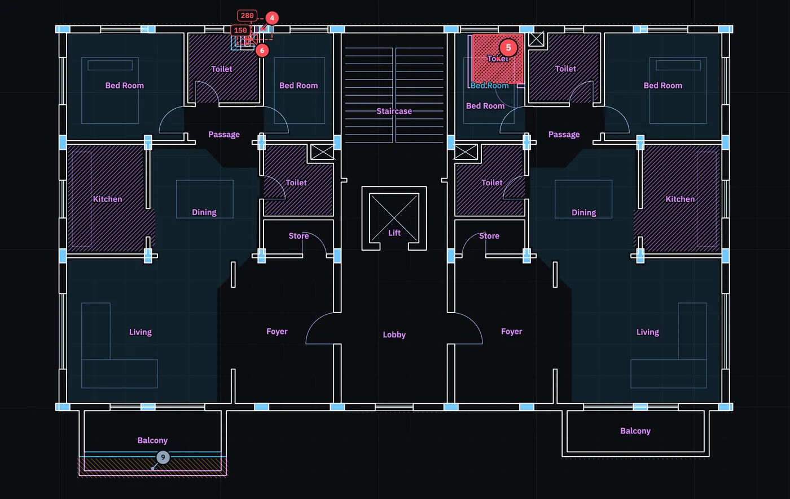
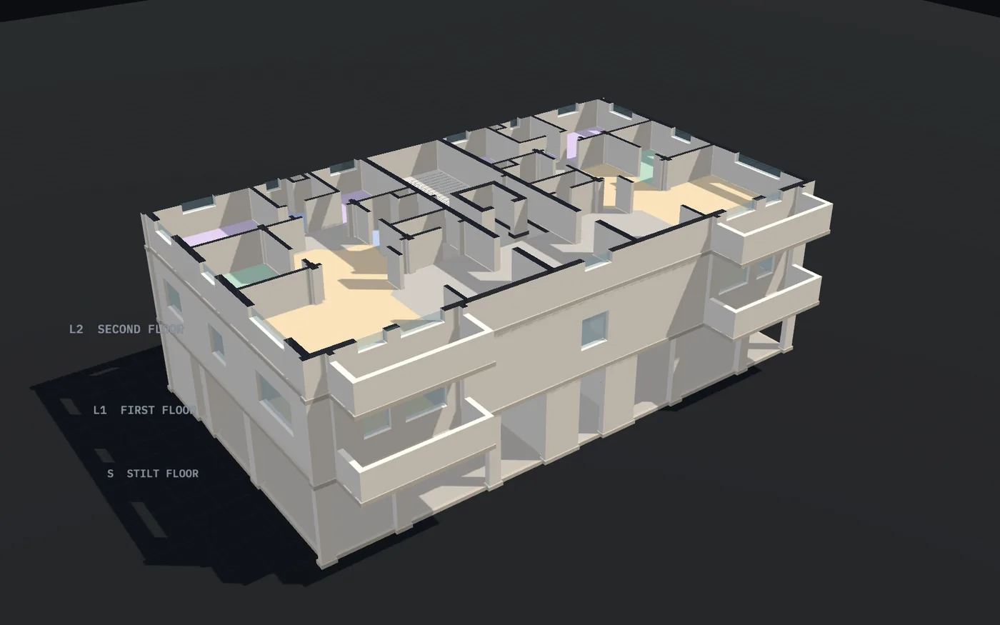
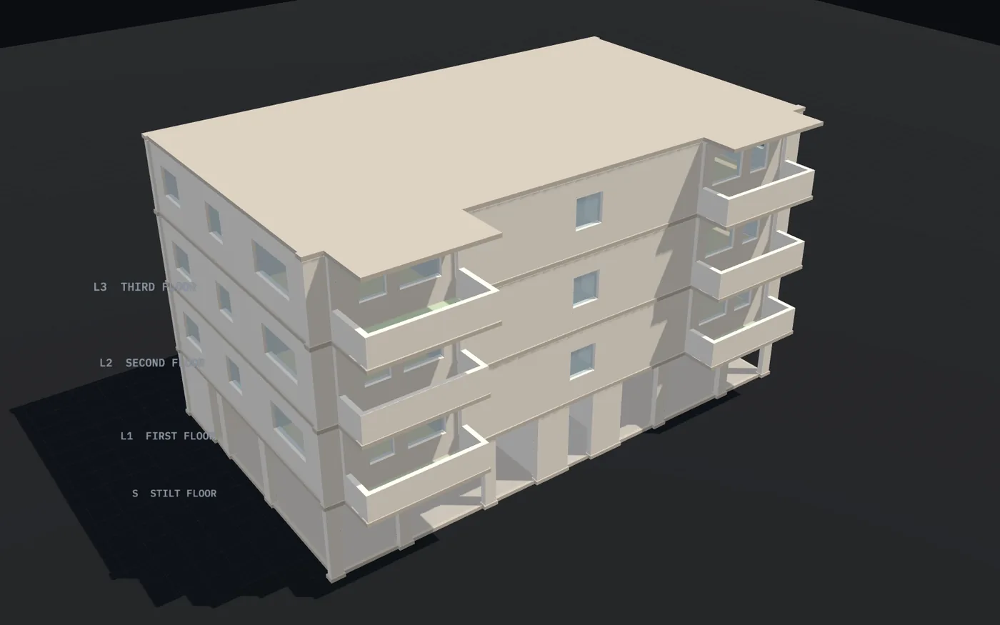

Floating columns
A column with nothing under it needs a transfer beam, and IS 1893 lists it as a vertical irregularity. Columns that step sideways get their offset in mm.
For architects · set up for Ahmedabad
Drop the DWG or DXF you already have. Plumb lines the floors up, finds what doesn’t stack between them, and turns the plans into a 3D building. In your browser, in seconds.
DWG or DXF · or drop them anywhere on this page · stays on your computer · no sign-up


How it works
One drawing with every floor plan laid out side by side, or one file per floor. Plumb works out the units, what each layer holds, every room and every column.
Each floor is lined up on the one below by its columns, then checked for everything that has to continue down: structure, wet areas, shafts, cores and slab edges.
The plans become a building: walls to full height, doors, windows, slabs and a roof. Show it up to any floor and slice through it.
Markups as a DXF to XREF over your drawing, an issue log for each consultant, a printed report, and a 3D model file.
What it checks
Each sheet is right on its own, so these usually turn up on site, after the slab is cast.
A column with nothing under it needs a transfer beam, and IS 1893 lists it as a vertical irregularity. Columns that step sideways get their offset in mm.
A toilet or kitchen above a bedroom or living room means drains through its ceiling and leaks into it. The overlap is measured in m².
Ducts, lift wells and stairs have to run straight. Plumb reports how far each one shifts, or that it stops.
Balconies and cantilevers beyond the floor below, with depth and area, so the structural engineer sees them early.
3D model

Revisions
Upload the next drawing set into the same project. Plumb finds each issue again in the same place on the same floors, marks what got fixed, what’s new and what came back, and keeps the history with your notes.
Mark an issue in review with the structural or plumbing consultant, resolved, or accepted as drawn.
Files
DWG and DXF, text or binary, several files at once. Layer names don’t need to follow any standard: Plumb reads them by name and by what’s drawn on them, and remembers your office’s names.
Drawings are read on your computer and saved only in your browser. Nothing is uploaded. The optional AI assist uses your own key and sends layer names and findings, never the drawing.
Coming next: area statements with RERA carpet area and FSI under Gujarat’s CGDCR 2017, then bye-law checks with the clause beside every result. mm or ft-in, m² or ft², the way offices here draw.
Questions
No. Any DWG or DXF works, from any CAD program, or exported from Revit or ArchiCAD.
The import shows the floors, units and layer roles it found, and each one can be changed in a click. Click a room in the plan to set its type. Plumb remembers your office’s layer names for the next job.
No. It finds coordination problems early and turns them into precise questions for the right consultant.
Only in this browser, on your computer. Nothing is uploaded to any server. Settings has a button to delete everything.
Nothing while it’s being built.